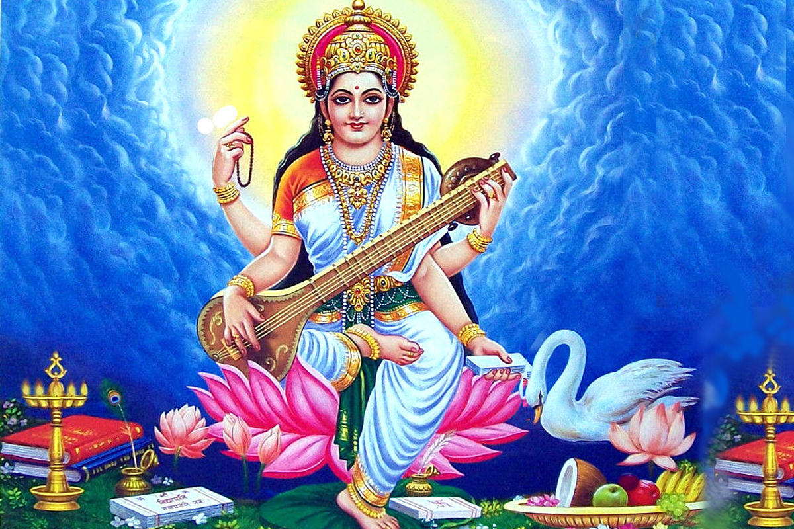

Saraswati Puja Invitation
"সরস্বতী মহাভাগে বিদ্যে কমললোচনে
বিশ্বরূপে বিশালাক্ষী বিদ্যাং দেহিং নমোহস্তুতে||"

You and your family are cordially invited to Join,Celebrate and Grace the
auspicious Occasion
of Saraswati Puja with your Family,Friends and Relatives on 14.02.2024
at our home.
Programme:
- Puja Start--------------------------- 09:00 AM
- Pushpanjali------------------------- 09:45 AM
- Prasad and Bhog Distribution----- 10:00 AM
- Bhajan Sandhya-------------------- 06:00 PM
- Ratri Bhoj--------------------------- 09:00 PM
Address-:
Amlapukur Baroari Tala
Kalna
Purba Bardhaman
713409
Google Map Link
Sender Name:
Bhaskar Mallick & Family
RSVP: 6296839059/1234567890
<-#-#-#-#-><-#-#-#-#-><-#-#-#-#-><-#-#-#-#-><-#-#-#-#-><-#-#-#-#-><-#-#-#-#-><-#-#-#-#->